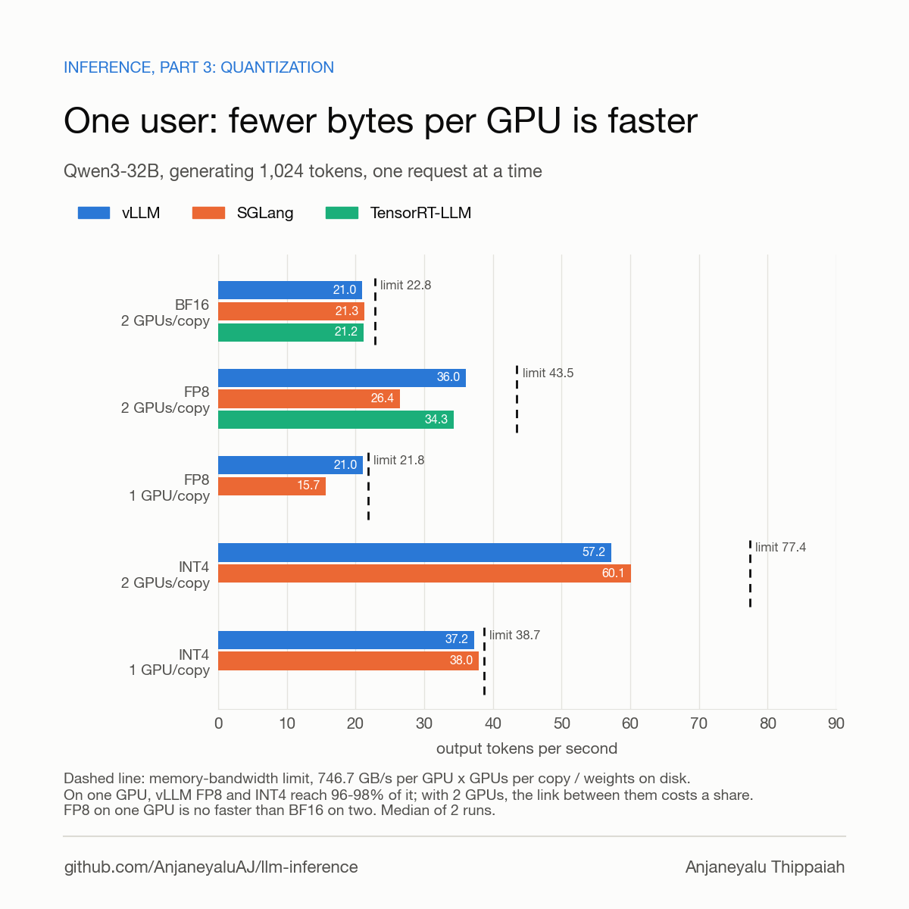
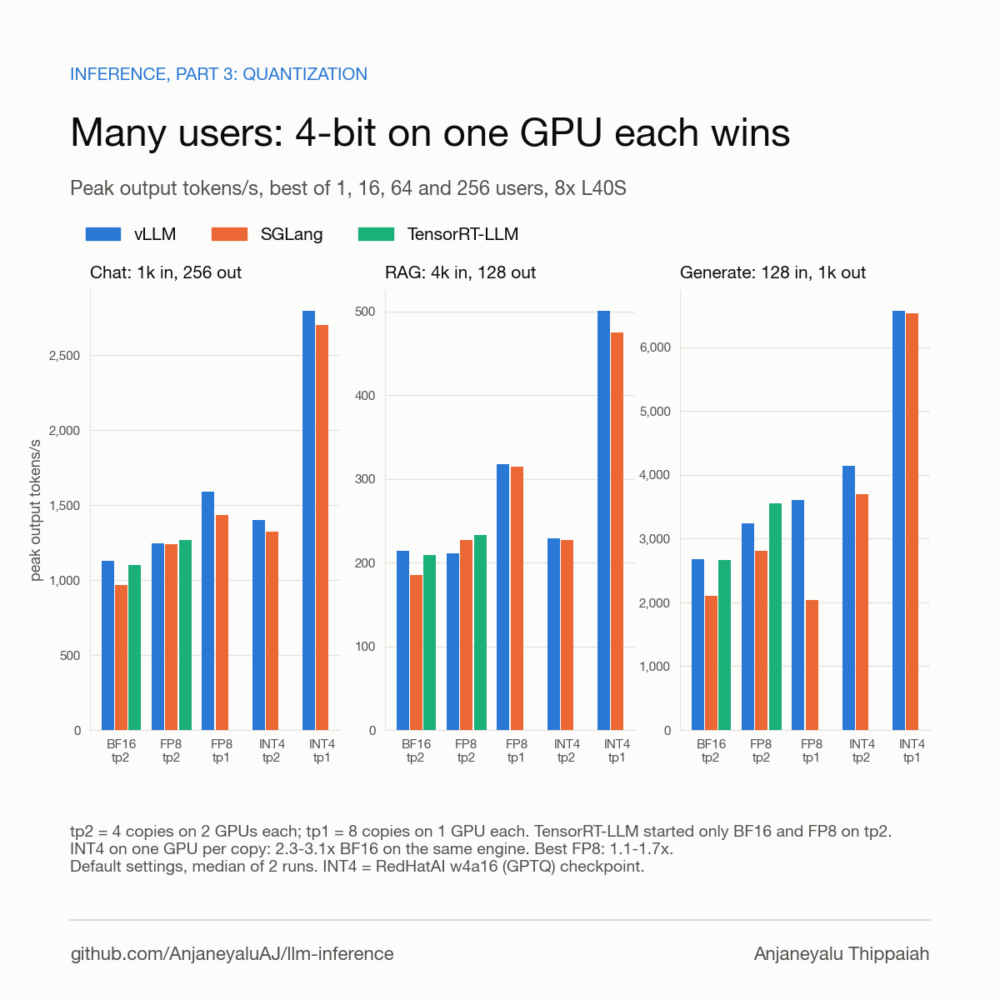
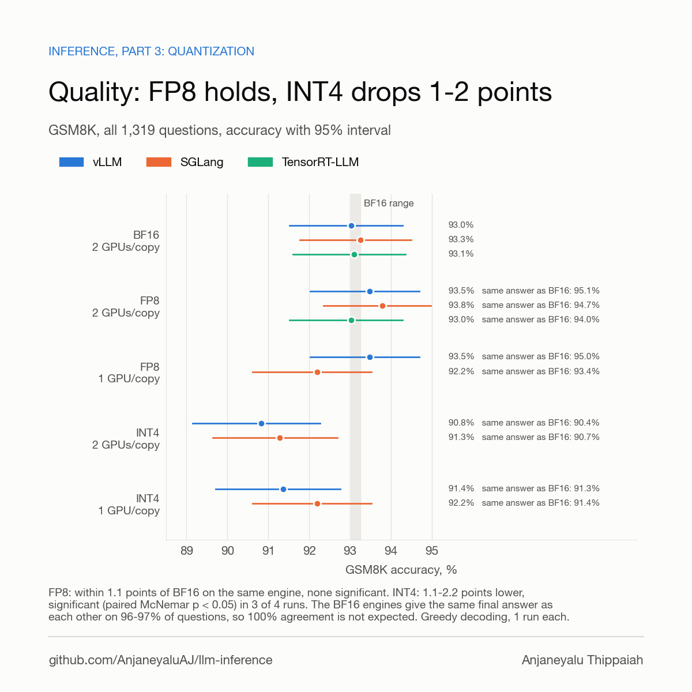

Making a 32B model smaller: about 2.5x cheaper, for 1-2 points of accuracy
The same 32B model in 16-bit, 8-bit and 4-bit, on the same eight GPUs. Smaller numbers let each copy fit on one GPU. How much faster does that make it, and what does it cost in answers? Three engines, 97,488 requests, and every question in a math test.
Code and data: AnjaneyaluAJ/llm-inference. The plan with its predictions, every request, every answer, and the server and GPU logs.
Measured: 25 to 26 November 2026, on the same AWS g6e.48xlarge (8x NVIDIA L40S) as Part 2.
In Part 2, Qwen3-32B needed at least two GPUs, because its 16-bit weights take 65.5 GB and an L40S has 48 GB. On that machine the GPUs have no fast link between them, and the best way to use eight of them under load was four copies of two GPUs each.
Quantization stores the weights in fewer bits. The model gets smaller, and two things could follow: each token needs fewer bytes read from memory, and the model may fit on one GPU, so the GPUs stop talking to each other at all. The question is how much speed that buys, and how much answer quality it costs.
| Format | Weights | Splits tested |
|---|---|---|
| BF16 (16-bit) | 65.5 GB | 2 GPUs per copy (Part 2's best) |
| FP8 (8-bit) | 34.3 GB | 2 GPUs, and 1 GPU per copy |
| INT4 (4-bit)* | about 19.5 GB | 2 GPUs, and 1 GPU per copy |
Checkpoints: Qwen/Qwen3-32B, Qwen/Qwen3-32B-FP8 and RedHatAI/Qwen3-32B-quantized.w4a16. *The plan used Qwen's own 4-bit (AWQ) checkpoint first. It did not work, as explained below, so INT4 here is Red Hat's GPTQ version, the fallback the plan named in advance. Both 4-bit formats keep the activations in 16-bit. I quantized nothing myself: every checkpoint is a published one.
With one GPU per copy, the eight GPUs run eight independent copies (tp1dp8). With two, they run four (tp2dp4).
The setup
- Hardware and engines: the same instance and the same images as Part 2. vLLM v0.34.0, SGLang v0.5.23 and TensorRT-LLM 1.3.0, at default settings, with only the context length (8,192) and the split set. The KV cache (each user's context) stays 16-bit everywhere.
- Traffic: chat (1k tokens in, 256 out), RAG (4k in, 128 out) and generate (128 in, 1k out), at 1, 16, 64 and 256 users at once, two repeats in shuffled order. 97,488 requests in all, over about 20 hours. 230 of them, all on generate and all on vLLM or TensorRT-LLM, came back with no text, the same engine issue as in Part 2; they are counted as failures and left out of the throughput.
- Quality: every combination answered all 1,319 questions of the GSM8K math test, with greedy decoding. I compared each one's answers question by question with the 16-bit model on the same engine.
- A control: BF16 was measured again in this run. It matched Part 2 to within 0.2% at the median, and no point differed by more than 3%, so the two parts can be compared directly.
First: which checkpoints actually work
Before the sweep, every engine loaded every checkpoint and answered 20 test questions. That check turned out to matter.
- Qwen's 4-bit checkpoint started on vLLM and SGLang, and then wrote nonsense. Asked a math question, vLLM answered "locklocklocklock..." and SGLang "!!!!!!!!...", for all 20 questions on both. Neither server failed to start. If I had only checked that, every 4-bit number in this post would have been the speed of producing garbage. I did not confirm the cause. One clue: vLLM logged thousands of warnings about loading 16-bit (BF16) weights into parameters of a different 16-bit type (FP16), and none with Red Hat's checkpoint. Red Hat's 4-bit version scored 17-18 of 20 on both and is what I used.
- TensorRT-LLM ran only the 2-GPU 16-bit and 8-bit setups. With one GPU per copy, it ran out of memory at start-up with both 8-bit checkpoints: the model already took about 32.5 of the GPU's 44.4 GiB when it failed, and its default settings did not leave room. It could not start either 4-bit checkpoint. Changing its memory settings might fix the first problem, but that is tuning, which this plan excluded.
So 12 of the 15 planned combinations ran: 3 engines on 16-bit and 2-GPU 8-bit, and vLLM and SGLang on the rest.
The predictions
As in Parts 1 and 2, I committed the predictions to GitHub before anything ran. The ceiling for one user is the same arithmetic: every token reads all the weights once, at 746.7 GB/s per GPU. Half the bytes means twice the ceiling.
| # | Prediction | Result |
|---|---|---|
| 1 | One user: 4-bit on 2 GPUs is the fastest of all; 8-bit on 1 GPU is no faster than 16-bit on 2 | Held 60.1 tokens/s; 21.0 vs 21.0 |
| 2 | Many users: the best 8-bit setup has at least 1.4x the peak of 16-bit on chat and generate | Wrong on generate 1.41x chat, 1.35x generate |
| 3 | At 256 users, 8-bit beats 4-bit on chat and generate | Wrong best 4-bit was 1.8x best 8-bit (1.8-2.3x within each engine) |
| 4 | 8-bit on 1 GPU has the least context room, so 2 GPUs per copy beats it on RAG and chat at 256 users | Partly wrong the memory part held, but 1 GPU per copy won by 1.2-1.5x |
| 5 | 8-bit within 1 point of 16-bit on GSM8K, 4-bit within 3; same final answer on at least 95% (8-bit) and 90% (4-bit) of questions | Partly wrong accuracy mostly held; 8-bit agreed on 93-95% |
| 6 | At least one engine cannot serve an official checkpoint without the fallback; most likely TensorRT-LLM with 4-bit | Held and worse: no engine ran Qwen's 4-bit correctly |
One user: fewer bytes per GPU is faster
With one user, speed follows the bytes each GPU must read per token. 8-bit on one GPU reads 34.3 GB per token; 16-bit on two GPUs reads 32.8 GB on each. So they run at the same speed: 21.0 tokens/s on vLLM for both. 4-bit on two GPUs reads the least per GPU and was the fastest: 60.1 tokens/s on SGLang and 57.2 on vLLM, almost 3x the 16-bit model.

The second thing the chart shows is the cost of the link from Part 2. On one GPU, vLLM's 8-bit and both 4-bit runs got within 1-4% of the memory limit (for 4-bit, using the 19.5 GB that Red Hat's checkpoint takes in memory). Split over two GPUs, 4-bit reached only 74-78% of its limit. The faster each GPU finishes its share, the bigger the fixed cost of talking to the other one becomes.
Many users: 4-bit on one GPU each wins, by a lot

Eight 4-bit copies, one per GPU, had the highest peak on every workload and both engines that ran it. Against 16-bit on the same engine, that is 2.3-3.1x the throughput. On vLLM, generate went from 2,678 tokens/s to 6,568.
The best 8-bit setup managed 1.1-1.7x. And for both formats, one GPU per copy beat two GPUs per copy on every workload, with a single exception (SGLang 8-bit on generate, below).
What I got wrong
Predictions 2 and 3: FP8 did not run as FP8 everywhere
I expected 8-bit to do well under load for a specific reason: the L40S has FP8 tensor cores, which multiply 8-bit numbers twice as fast as 16-bit ones. Once many users share each pass through the weights, that arithmetic speed should matter. And I expected 4-bit to fall behind, because its weights must be unpacked to 16-bit before every multiply.
The server logs show the engines did three different things with the same 8-bit checkpoint:
- vLLM did not use FP8 arithmetic at all. At start-up it logs: "Your GPU does not have native support for FP8 computation but FP8 quantization is being used. Weight-only FP8 compression will be used leveraging the Marlin kernel." With this checkpoint's format on this GPU, it stores the weights in 8-bit and multiplies in 16-bit, exactly as it does for 4-bit.
- SGLang did use FP8 arithmetic, but warned at start-up "Using default W8A8 Block FP8 kernel config. Performance might be sub-optimal!": it has no tuned settings for the L40S.
- TensorRT-LLM also used FP8 arithmetic, with its auto-tuner falling back to a default for some matrix shapes.
So on vLLM, 8-bit and 4-bit were the same method with different byte counts, and 4-bit simply read half as much. Did FP8 arithmetic help where it was used? Not clearly. Under load, TensorRT-LLM's FP8 beat vLLM's weight-only FP8 on the same 2-GPU split by 9% on generate (3,549 against 3,244 tokens/s), but SGLang's FP8 was the slowest of the three. Neither came close to the gain from 4-bit.
As for unpacking 4-bit weights getting expensive as the batch grows: that only happens once the batch is large enough for arithmetic, not memory reads, to set the pace. With 256 users spread over eight copies, each copy handles at most 32 at a time. 4-bit also leaves each GPU about 3x the context room of 8-bit (89,600 tokens against 30,208 on vLLM). I did not measure these two effects separately, so I cannot say how much of the gap each one explains.
Prediction 4: less memory, but no communication
The memory part was right. 8-bit on one GPU had the least room for context of any setup: 30k tokens per copy on vLLM and about 20k on SGLang. Eight such copies hold 242k tokens in all, against 774k for four 2-GPU copies.
It won anyway, by 1.2-1.3x on chat and 1.4-1.5x on RAG at 256 users. RAG is the workload where Part 2 found tensor parallelism hurts most: on this machine, reading a long prompt across GPUs costs a lot of communication. A copy on one GPU sends nothing to any other GPU. That is my explanation, consistent with Part 2, not a separate measurement.
The memory limit did show up in one place. SGLang 8-bit on generate at 256 users had about 20k tokens of room per copy, and up to 32 requests of 1,152 tokens each wanting it. Its median user waited 63 seconds for the first token, and two GPUs per copy beat one there (2,804 tokens/s against 2,042). It is the one exception to the pattern.
Prediction 5: I set the agreement bar higher than 16-bit itself clears

On accuracy the prediction mostly held. 8-bit was within 1 point of 16-bit on the same engine in four of five runs, and 1.1 points lower in the fifth. None of those differences can be told apart from chance by a paired test. 4-bit lost 1.1-2.2 points, inside the 3 I allowed, and in three of its four runs that loss is real (paired McNemar test, p < 0.05).
I also predicted that 8-bit would give the same final answer as 16-bit on at least 95% of questions. Two of five runs got there; the others were at 93.4-94.7%. But the three 16-bit engines, running the same weights, agree with each other on only 96.4-97.0% of questions. Small numerical differences between engines change 3-4% of answers on their own. A 95% bar for a different format was close to that ceiling, and too tight.
What it costs
At $30.13 an hour for the instance, divided by peak throughput:
| Per million output tokens, vLLM | Chat | RAG | Generate |
|---|---|---|---|
| 16-bit, 2 GPUs per copy | $7.42 | $39.14 | $3.13 |
| 8-bit, 1 GPU per copy | $5.26 | $26.38 | $2.32 |
| 4-bit, 1 GPU per copy | $3.00 | $16.72 | $1.27 |
At peak throughput with no latency target. At 256 users, 4-bit's median wait for a first token was 0.8-3.2 seconds on chat and generate but 26 seconds on RAG. Other engines are in the write-up.
On vLLM, 4-bit is 2.3-2.5x cheaper than 16-bit on the same machine, for 1.7 points of GSM8K accuracy (on SGLang, 2.6-3.1x cheaper). Whether that trade is worth it depends on the use. For a math tutor, maybe not. For summarizing documents at scale, probably. 8-bit is 1.3-1.5x cheaper on vLLM, with no measurable loss.
What I learned
- Check that the answers are right, not just that the server starts. An official checkpoint loaded on two engines without an error and produced nothing but repeated tokens. Only a quality check before the benchmark caught it.
- Read the start-up logs. "FP8" meant three different things on three engines. On vLLM it meant 8-bit storage with 16-bit arithmetic, which changes the reasoning behind any prediction about it. The label on the checkpoint is not what runs.
- On GPUs without fast links, fitting on one GPU is worth a lot. Under load, one GPU per copy beat two on every workload but one, even with a quarter to a third of the total context room. Most likely, removing communication mattered more than memory.
- Measure quality question by question. Overall accuracy moved by 1-2 points, about the uncertainty of a single run. Comparing answers in pairs showed that 4-bit's loss was real in three of four runs, and found no loss for 8-bit.
- Know the noise floor before setting a bar. Three engines running identical 16-bit weights disagree on 3-4% of answers. Any agreement target for a quantized model has to start from there.
What this does not show
- One model, one GPU type, default engine settings. On H100-class GPUs, where vLLM does use FP8 arithmetic, 8-bit could rank differently.
- One 4-bit checkpoint. Other 4-bit methods may differ in speed and quality.
- GSM8K is one test of short arithmetic reasoning. It says nothing about long documents, code or other languages. Quality comes from one run per setup.
- Peaks with no latency target, two repeats. The median difference between repeats was 0.3%, and 143 of 144 points were within 5%.
- The costs and the explanations for predictions 2-4 were worked out after the run. They were not predictions.
Next
Every number in this series so far is a peak, reached with users waiting seconds or minutes for a first token. Nobody deploys that way. Next I want to measure what each setup serves while keeping the wait under a fixed limit, and what tuning the engines' settings changes about the ranking.
Write-up: results/step3 · Plan and predictions: docs/step3_quant_plan.md
Anjaneyalu T. Questions and corrections are welcome: email or LinkedIn.